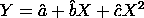
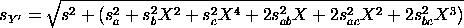
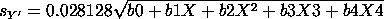

2.6. Case studies
2.6.5. Uncertainty analysis for extinguishing fire
2.6.5.3. |
Compute predicted values and standard deviation of predicted values of flowrate |



a b c
a 0.3076035E-03 -0.1132122E-04 0.8771889E-07
b -0.1132122E-04 0.4565592E-06 -0.3695745E-08
c 0.8771889E-07 -0.3695745E-08 0.3083867E-10
Substituting the appropriate values gives the following
formula for the flowrate uncertainty

b0 = 1.0003076 b1 = -0.0000002264 b2 = 0.000000632 b3 = -0.000000003696 b4 = 0.00003084
SD OF SD OF
MEASURED PREDICTED PREDICTED FUTURE
FLUX FLOW FLOW FLOW
X Y' Scal Sy'
======== ========= ========= =========
26. 5.2056756 0.0055054 0.0287137
30. 5.9764223 0.0047473 0.0285781
27. 5.3996716 0.0052807 0.0286715
44. 8.5641050 0.0045642 0.0285482
16. 3.2177362 0.0088804 0.0295471
21. 4.2226119 0.0069547 0.0290265
14. 2.8096786 0.0097664 0.0298254
24. 4.8150678 0.0060222 0.0288173
22. 4.4209700 0.0066239 0.0289490
43. 8.3849421 0.0045052 0.0285389
41. 8.0239973 0.0044005 0.0285225
47. 9.0963602 0.0047504 0.0285786
45. 8.7423964 0.0046256 0.0285581
42. 8.2049055 0.0044501 0.0285302
14. 2.8096786 0.0097664 0.0298254
14. 2.8096786 0.0097664 0.0298254
32. 6.3565612 0.0045103 0.0285397
29. 5.7850447 0.0049013 0.0286041
47. 9.0963602 0.0047504 0.0285786
44. 8.5641050 0.0045642 0.0285482
47. 9.0963602 0.0047504 0.0285786